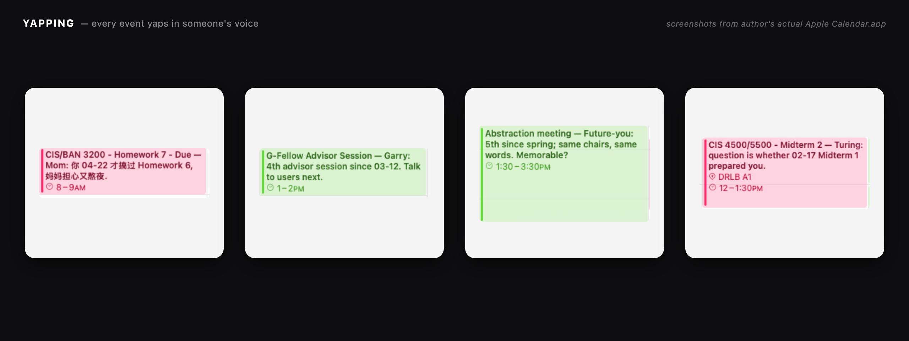

Your calendar, but yapping. YAPPING is an MCP server for macOS Calendar.app. It gives Claude full read/write access to your Apple Calendar — plus 28 voices (Mom, Future-you, Garry Tan, LeBron James, Hilary Hahn, Alan Turing, Confucius, ...) who yap on every event with one-liners that reference your past calendar history. 22 tools, 12 characters, 16 distillers, persistent memory, fully reversible.
What it does
The original apple-calendar-mcp shipped with six tools and one job: let Claude put events on the calendar. YAPPING keeps that core and layers a second system on top — 28 voices with persistent memory who watch what you schedule and yap about it.
Add a 6 a.m. flight back to Philly and Mom remembers the last three times you didn't call after landing. Schedule a third coffee with the same person this week and Future-you has something to say about it. The voices are configurable, the memory is local, and every action is reversible.
Why
Calendars are flat. They tell you what but they don't tell you who's affected, what's been said before, or what your past self would think of this. I wanted a tool that kept the data discipline of an MCP server but added the texture of having people in your life who pay attention.
The voices don't generate plans. They don't optimize. They just yap. That turned out to be more useful than any of the optimization I was trying to bolt on.
How it's built
YAPPING inherits the AppleScript injection-safe pipeline from apple-calendar-mcp — every untrusted string passes through a single escapeAppleScriptString, dates are constructed from epoch seconds, and stdout belongs to the MCP protocol while logs go to stderr.
The new layer is character memory: a small persistence file per character, with structured recollection of past events the character has seen, plus a reaction tool that synthesizes a comment using both the new event and the relevant history.
22 tools total. The calendar primitives (list_calendars, list_events, search_events, create_event, update_event, delete_event) plus character management (create / update / list / delete) across 12 characters, the reaction tools that tie events to memory, the mortality overlay, and 16 distillers that turn past events into structured memory — 28 voices in all.
What's next
More voices. Better memory consolidation. A way to surface the yapping without having to ask for it.